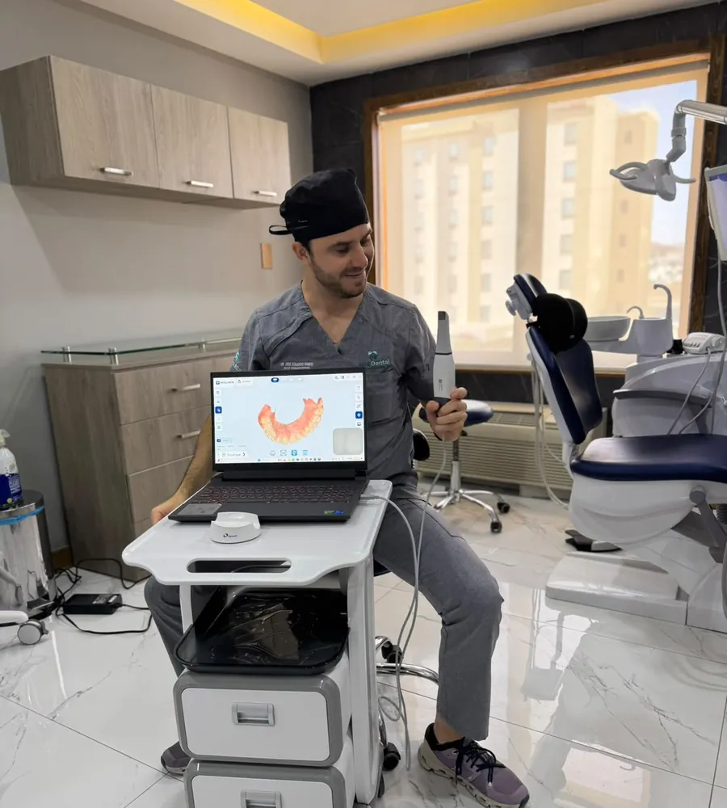
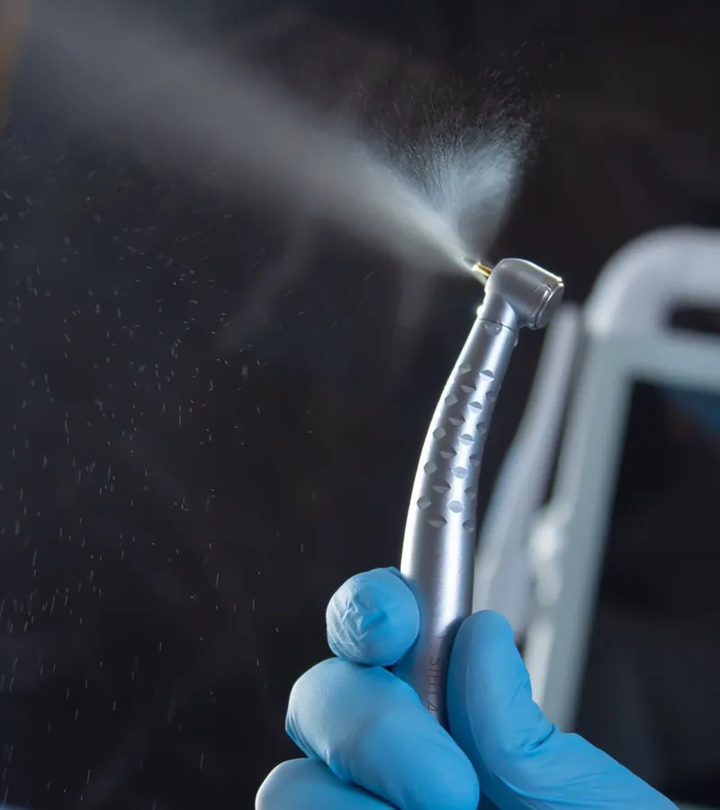
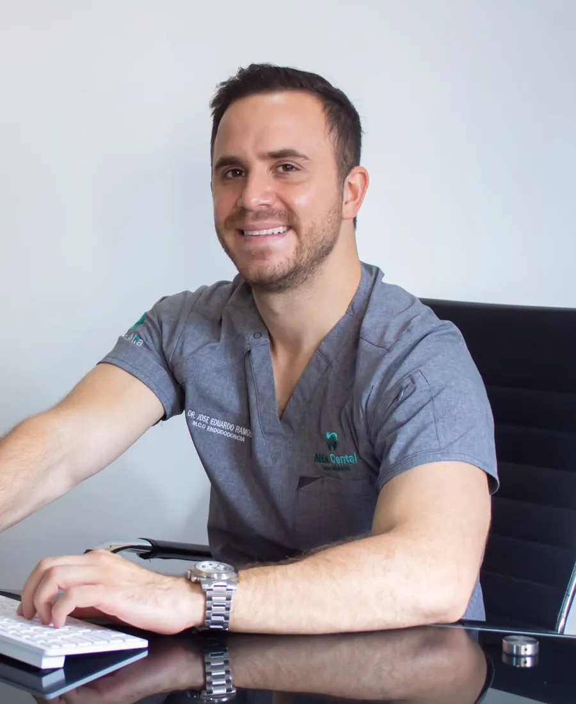

Protege dientes debilitados
Cubre el diente para evitar que se fracture o siga deteriorándose.
Servicio dental en Chihuahua
Una corona dental es una funda que cubre por completo un diente dañado para protegerlo y devolverle su forma, tamaño y resistencia. También se utiliza sobre implantes y después de algunos tratamientos de conducto.

Beneficios
Restauración que cubre y protege una pieza dañada, recuperando su forma y resistencia.
Cubre el diente para evitar que se fracture o siga deteriorándose.
Devuelve al diente su forma para masticar con normalidad.
Se diseña para armonizar con el color y la forma de tus dientes.

¿Cuándo se recomienda?
Una corona suele recomendarse cuando:
Paso a paso
Cada tratamiento se valora de forma personalizada según tu caso clínico.
Revisamos el diente y te explicamos si una corona es la mejor opción.
Preparamos el diente para que la corona ajuste correctamente.
Tomamos los registros necesarios para fabricar tu corona a la medida.
Colocamos la corona y ajustamos tu mordida.
Preguntas Frecuentes
Si tienes otra pregunta, contáctanos y con gusto te ayudaremos.

Nuestros Servicios
Conoce otros tratamientos de Alta Dental Especialidades que pueden complementar tu atención.
Solución fija para reemplazar una o más piezas ausentes apoyándose en dientes vecinos.
Ver servicioTratamiento de conducto para salvar piezas dañadas y aliviar el dolor de origen dental.
Ver servicioSustitución de raíces dentales con implantes que devuelven función y estética a tu sonrisa.
Ver servicioEscríbenos por WhatsApp al (614) 197 2298 o llámanos al (614) 689 3737 Ext. 1411. Estamos para ayudarte.